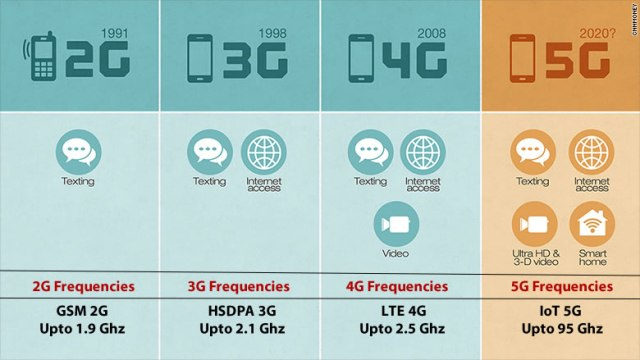

La tecnología 5G introducirá ventajas en toda la arquitectura de red. La nueva radio 5G, el estándar global para una interfaz aérea inalámbrica 5G con mayor capacidad, abarcará espectros que 4G no utiliza. Las nuevas antenas incorporarán tecnología conocida como MIMO (entrada múltiple, salida múltiple) en masa, lo que permite que múltiples transmisores y receptores transfieran más datos al mismo tiempo. Pero la tecnología 5G no se limita al espectro de la nueva radio. Está diseñada para admitir una red convergente y heterogénea que combina tecnologías inalámbricas con y sin licencia. Esto añadirá ancho de banda disponible para los usuarios. Las arquitecturas 5G serán plataformas definidas por software, donde la funcionalidad de la red se administra a través de software en lugar de hacerlo a través de hardware. Los avances en cuanto a virtualización, tecnologías basadas en la nube y automatización de procesos de TI y comerciales permiten que la arquitectura 5G sea ágil y flexible y ofrezca acceso al usuario en cualquier momento y lugar. Las redes 5G pueden crear constructos de subred definidos por software, conocidos como segmentos de red. Estos segmentos permiten que los administradores de red determinen la funcionalidad de la red de acuerdo con los usuarios y los dispositivos. 5G también mejora las experiencias digitales gracias a la automatización con aprendizaje automático (ML). La demanda de tiempos de respuesta en fracciones de segundo (como las de los automóviles con piloto automático) requiere que las redes 5G utilicen la automatización con ML y, eventualmente, conocimiento profundo e inteligencia artificial (IA). El aprovisionamiento automatizado y la administración proactiva del tráfico y los servicios reducirá el costo de infraestructura y mejorará la experiencia conectada.
